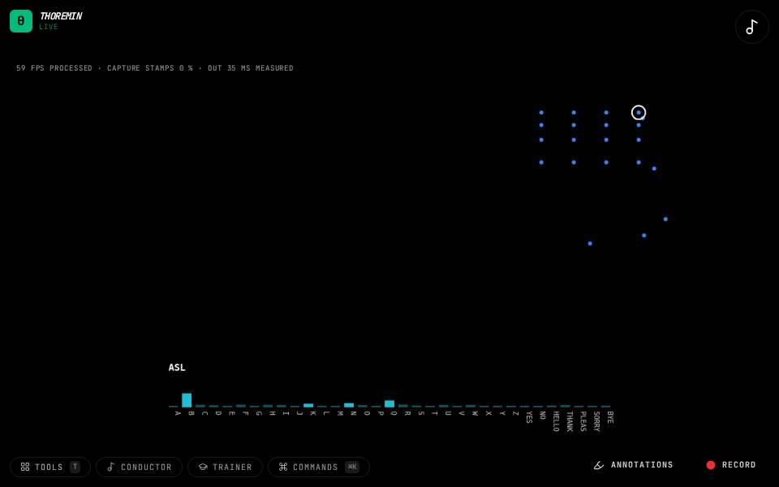
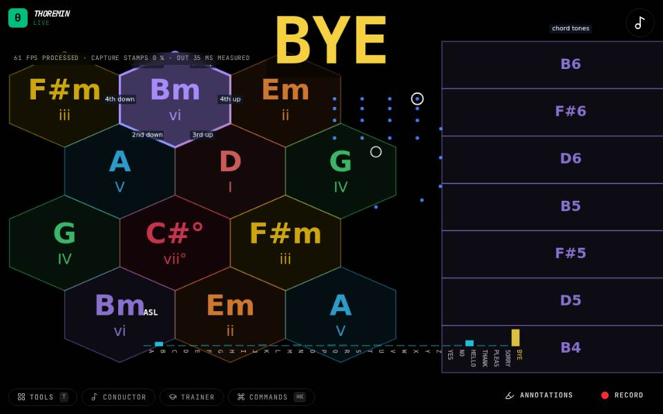

Sign instruments
Fingerspell American Sign Language to the camera and see the sign, or hear a chord for each letter from A to G.

ASL Chords
Fingerspell the letters A to G.

ASL Viewer
Allow the camera and hold a hand up.

Sign Map
Fingerspell a letter from A to G with one hand: its chord lights up on the map.

Sign Wheel
Fingerspell a letter from A to G and hold it a moment.